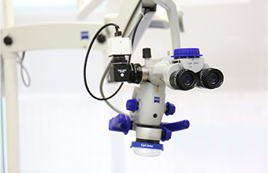
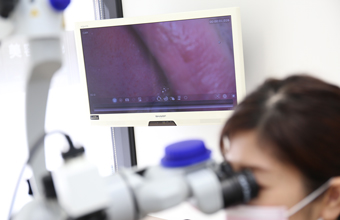
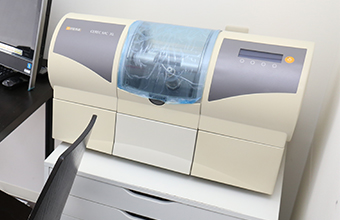
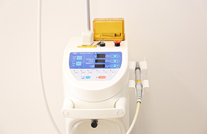
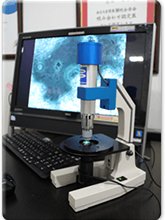
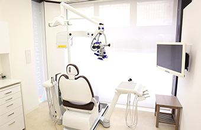
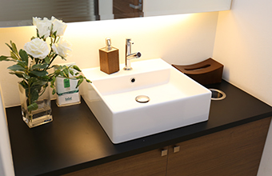
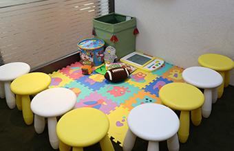

- トップ
- 医院紹介・アクセス
網島の歯医者「高田歯科クリニック」について
～医院概要・設備紹介～
横浜市港北区網島の歯医者「高田歯科クリニック」では、エビデンス（科学的根拠）に基づいた治療をマイクロスコープ（手術用顕微鏡）を用いて高品質な治療をご提供しています。こちらでは、当院の医院概要のほか、導入している医療設備や院内の様子を写真とともにご紹介します。
医院概要・アクセス
| 医院名 | 高田歯科クリニック |
|---|---|
| 住所 | 〒223-0053 横浜市港北区綱島西2-6-17 黒川ビル2階 |
| 電話番号 | ご予約はお電話でお気軽にどうぞ 045-642-4002 |
| 診療時間 | ［平日］9:30~13:30/15:00~18:30(最終受付:18:00) ［土日］9:30~13:30/15:00~18:00(最終受付:17:30) |
| 休診日 | 水曜・祝日 |
| 医師・スタッフ | 歯科医師・院長 高田勇生 / 歯科衛生士 |
| 診療メニュー | 歯科 / 小児歯科 / 矯正歯科 / 歯科口腔外科 / |
| アクセス方法 | 東急東横線網島駅から徒歩3分 |
網島の歯医者「高田歯科クリニック」の院内設備・院内の様子
導入設備
マイクロスコープ（手術用顕微鏡）

肉眼では見ることができない細かな部分を、マイクロスコープなら約4～20倍に拡大して見ることができます。暗くて狭い歯の内部まで、しっかりと確認しながら治療が行えるため、精確な処置が可能となり、治療レベルが格段にアップします。
当院では、精密かつ高度な治療を患者様にご提供するため、多くの治療でマイクロスコープを活用し、日々技術の向上に努めています。
動画システム

動画システムは、マイクロスコープから見た患者さんの処置映像を撮影・再生・保存するシステムです。
患者様自身が受けた治療をご自身でリアルタイムで確認していただくことができるため、より安心・納得の治療を受けていただくことができます。
セレック

その日のうちに、オールセラミックの詰め物・被せ物が完成するシステムです。従来の人の手でセラミックを削り出す生成方法とは異なり、口腔内を撮影したデータを元にコンピュータで精密に設計し、院内にある機械を使ってセラミックを削り出します。
何度も通院することなく、たった1度の通院で銀歯など気になる詰め物・被せ物を白くて美しいセラミック製のものに交換することができます。ただし、お口の状態によって、他に優先すべき治療がある場合は、当日中にセレック治療ができないことがあります。
レーザー治療器

当院では、レーザー治療器を導入しています。1秒間に1兆回以上振動する強いエネルギーを持つレーザー治療器には、殺菌・消毒、切開・止血などさまざまな用途があります。また、治癒促進効果が期待できるため、最小限の侵襲（組織に与えるダメージ）で、最大限の効果が得られます。副作用はありませんのでご安心ください。
妊娠中の方、高血圧症の方、ペースメーカーを入れている方、人工透析をされている方にも安心して治療を受けていただけます。
位相差顕微鏡

口腔内には、肉眼では見えない細菌が数多く存在しています。お口の中の細菌を採取し、位相差顕微鏡で確認することで、細菌の種類や数、活動性を観察することができます。細菌が動いているところを見ると、かなり衝撃を受ける方が多いのですが、それだけに患者様にも意識を大きく変えていただけるきっかけとなっています。
当院では、歯周病検査の一環として行っておりますので、検査料が別途かかるということはありません。
院内の様子
治療室

治療室はすべて、プライバシーに配慮した完全個室となっています。周囲を気にすることなく治療に集中でき、気になったことをご相談いただけます。
各診療室内にはモニターを設置しており、患者様自身のお口のレントゲン写真だけでなく、治療内容のアニメーションを使用したわかりやすいご説明も行っています。
化粧室

ホテルのお部屋のようなイメージの、高級感や清涼感を意識した化粧室です。治療前のブラッシングや治療後のお化粧直しにぜひご利用ください。
キッズスペース

待合室にはお子様が退屈しないよう、キッズスペースをご用意しています。映画を見たり、おもちゃ等で遊んだりと、ご自由にお過ごしいただけます。受付担当者が様子を見ていますので、お子様連れの方にも安心して治療を受けていただけます。
診療室内でもテレビアニメを見ることができるので、お子さまが夢中になっている間に治療を進めることもできます。お子様連れで心配なことなどありましたら、お気軽にご相談ください。